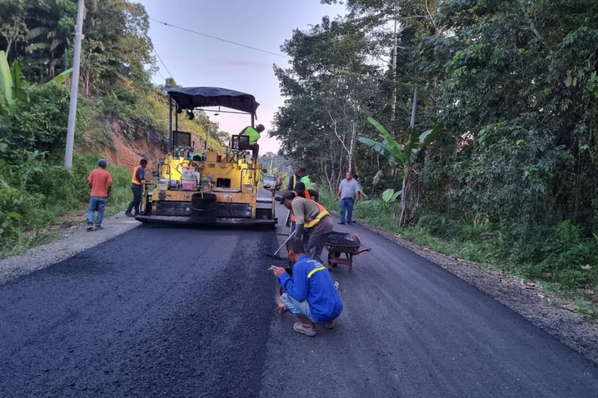

Dipublikasikan pada: 18 Juni 2025
Jalan Penghubung Antar Dusun Dibangun untuk Tingkatkan Aksesibilitas Warga
Desa Kuta Ujung resmi memulai pembangunan jalan baru yang menghubungkan Dusun Barat dan Dusun Timur. Proyek infrastruktur ini menjadi bagian dari program prioritas desa tahun 2025, dengan harapan dapat meningkatkan konektivitas antar wilayah dalam desa.
Pembangunan jalan sepanjang 1,5 kilometer ini dirancang untuk mempercepat distribusi hasil pertanian dan mempermudah akses warga ke pusat desa, sekolah, dan fasilitas kesehatan.
Proyek ini didanai oleh Dana Desa dan dikerjakan melalui pendekatan partisipatif yang melibatkan warga secara langsung dalam proses gotong royong. Dengan begitu, kebersamaan dan rasa memiliki masyarakat terhadap pembangunan desa semakin diperkuat.
Warga menyambut gembira dimulainya proyek ini dan berharap pembangunan dapat selesai sebelum musim hujan, agar tidak terganggu oleh kondisi cuaca.
← Kembali ke Beranda